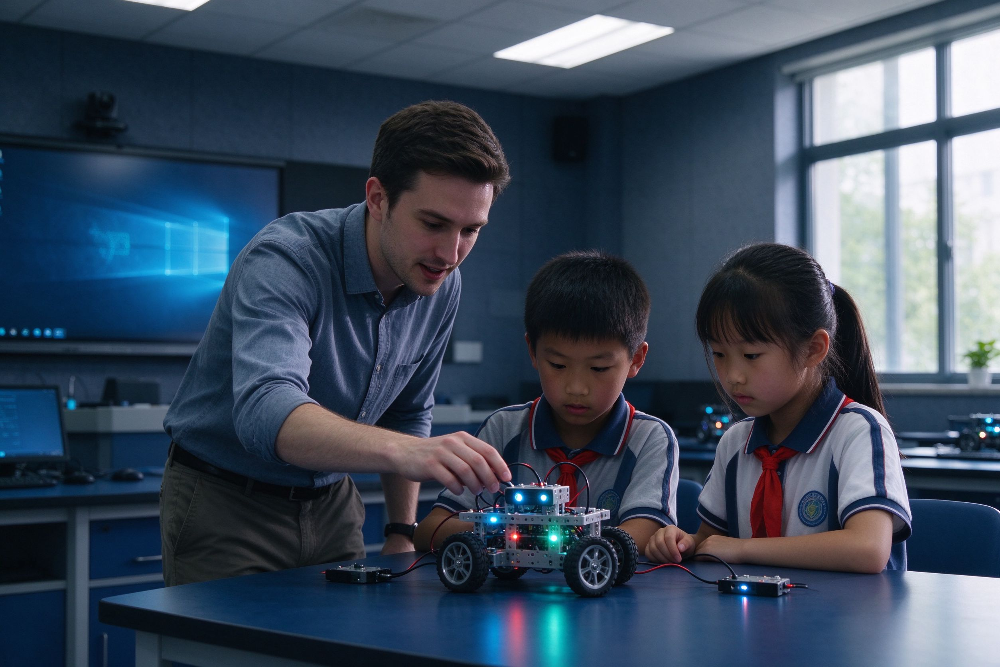

寒假科技营怎么选？机器人集训和编程冬令营怎么对比
寒假实际只有 3–4 周，选营看三件事：每天几小时、是做一个完整作品还是上一堆课、结营有没有可展示成果。连续 6 小时的大班营，孩子第三天就会疲。

结论先行：寒假真正能用的时间只有 3–4 周，而且中间夹着春节。选科技营只看三件事——每天投入几小时、是围绕一个完整作品还是散着上一堆课、结营有没有能拿出手的成果。三条都过得去，才值得报。
一、三种假期班型，各自的定位
- 竞赛集训型：面向已有基础、当季要参赛的孩子。特点是强度高、任务明确、有带队老师。零基础报这个基本是陪跑。
- 主题项目营：一周左右围绕一个主题做完整作品（比如做一个能避障的小车、一个感应装置）。适合想体验、想拿成果的孩子。
- 常规班插班：按原来的进度继续上，节奏平稳，不会掉队也不会突飞猛进。适合不想打乱学期节奏的家庭。
二、判断一个营好不好的五条
- 每天时长合理。小学生连续动手 3 小时左右是比较舒服的上限；一天排 6 小时以上，后半天基本是低效时间。
- 班型人数少。集训和项目营如果 15 人一个班、一个老师，很难逐个调试——而机器人课的瓶颈恰恰在“卡住的那一步”。
- 有明确成果物。结营能带走作品、作品视频或演示，是判断有没有真学到的最直接证据。
- 与学期课程接得上。营里学的东西，开学后能不能接着用？如果和常规课体系完全两套，等于另起一摊。
- 器材与场地谁出。营期是否需要自购器材、场地道具谁准备，报名时问清楚。
三、四个常见的坑
- 只宣传“名师”“名校”，但说不出每天的具体安排和时间表。
- 按“课时数”卖营，实际上把一天拆成 4 节 45 分钟课，孩子刚进入状态就下课。
- 承诺“营期结束可参赛/可拿证”，但不说选拔标准。
- 临到开营才公布价格和地点。
四、乐之疆的假期安排口径
寒暑假会开短期科创夏令营、机器人集训和竞赛冲刺班，一般提前 1–2 个月发布当期安排。具体的开营时间、班型、费用以当期公告为准，我们不提前承诺——因为每年赛历和场地安排都会变。
可以先做一件事：登记意向。名额出来时按登记顺序通知，不用天天刷页面。营期和常规课用同一批器材，校区提供，不需要家长自备。
常规课的课时口径不变：小学三年级以下 60 分钟／次，三年级以上 120 分钟／次，2–4 人小班——营期通常按这个时长做加密排布，而不是简单拉长到一整天。
五、下一步
如果你只是想让孩子寒假有事做、有点成果，选主题项目营；如果孩子已经在备赛，直接问集训安排。拿不准的话，带孩子来校区聊十分钟，比看十篇招生文案有用。
想了解这节课适不适合孩子？
校区在天津市河西区大沽南路 459 号下瓦房晶采大厦写字楼四楼，09:00–19:00 可到访，也可在线预约体验课。